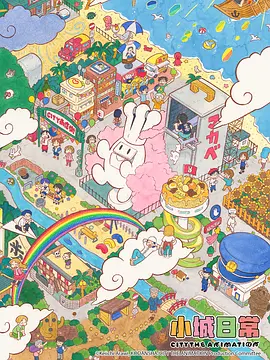

9.0
小城日常
CITY THE ANIMATION
2025
日本
评分 9.0
导演:
石立太一
演员:
小松未可子 / 丰崎爱生 / 石川由依 / 川原庆久 / 入野自由
类型:
喜剧
剧情简介
这座小城总是在不经意间打破日常的界限。早晨的街角，便利店的窗户刚刚升起第一道光，居民们已经在各自奇怪又真实的节奏里开始行动。有人骑着过度改装的自行车飞驰，有人在巷口与邻居争论昨晚的猫叫声，还有人只是呆呆看着天边的云，下一秒却卷入莫名其妙的混乱。小城给人的第一印象是普通，但每个角落都埋着随时会跳出来的惊喜。镜头在角色之间不断穿梭：在咖啡店练习吐槽的一对好友，在公园拍摄奇怪短片的学生，在街道上苦恼存款的上班族……他们本该互不相干，却总因某个意外的巧合纠缠在一起。突如其来的奔跑、戏剧化的误会、荒诞的连锁反应，让这座城市的节奏像随时会爆炸的气球，轻盈又不稳定。尽管混乱不断，却总能在喧闹背后看到温度：一句来得突然的鼓励、一杯递错却意外好喝的饮料、一场最终以笑声结束的小争吵。这些瞬间把城市的日常缝合成独特的风景。居民们或奔忙、或迷茫，却在这片充满奇思妙想的土地上彼此影响、彼此陪伴，让每一天都像一场难以预测的冒险。